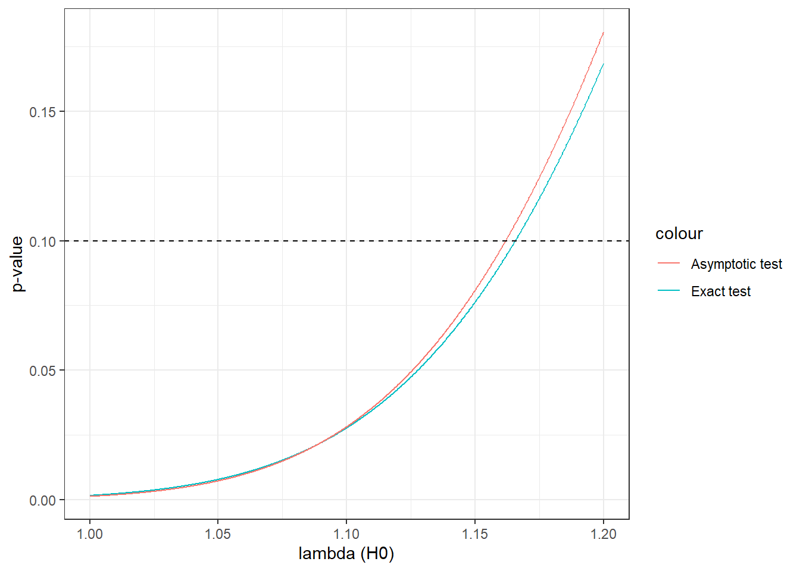

6 Inference using asymptotic assumptions
At this point, I am hoping that you have a rather grim view of hypothesis tests in the context of the previous chapter: we need to know a lot about our random variable in order to derive the distribution of our test statistic when \(H_0\) is true, and even when we know all of this, the process is a difficult one. Fortunately, we have another tool that allows us to make the process much simpler: asymptotics. Even if we don’t know (or don’t care) enough about our random variable to derive exactly its sampling distribution, we can use this tool to work out what it would be as our sample size \(N\) approached infinity. Then we take the leap of faith that our sample size is large enough that this distribution is a good approximation for our actual sample.
To do this, we use two theorems about sample means. The Weak Law of Large Numbers tells that as our sample size \(N\to\infty\), the probability that we are arbitrarily close to the population mean (i.e. \(E[X]\)) approaches 1. Then, central limit theorems tell us how we can appropriately scale things so that they are (usually) normally distributed as \(N\to\infty\). I introduce these concepts, then outline how we can use them to derive approximate properties of our estimator and/or test statistic if we can argue that our sample size is large enough. We then learn how these are useful for doing inference, and finish with a useful approximation of transformation of sample means.
6.1 Large-sample properties of estimators
In the previous chapter, we learned that bias, variance, and mean squared error are useful quantities to summarize the performance of an estimator. These are sometimes referred to small sample properties of estimators, meaning that they are things that you might need to worry about if your sample size is small. You may also have to worry about them is \(N\) is large, but there are some other properties that you might need to know about your estimators that relate to large samples.
6.1.1 Consistency
Suppose that there is a population parameter \(\theta\) that you would like to estimate. You have a sample \(\{X_i\}_{i=1}^N\), and an estimator \(\hat\theta\) which takes this sample and spits out a number (an estimate), which you hope is close to the true value, \(\theta\). You want to know if your estimating procedure is one in which obtaining more observations (i.e. increasing \(N\)) gets your estimate closer to \(\theta\). Unfortunately, since your sample is random, so is your estimator \(\hat\theta\). This means that no matter how much data you collect, there is still a chance that your estimate is terrible. What we {} work out, though, is whether increasing \(N\) will get us close enough to \(\theta\), with probability very close to 1. In math speak, what we want is: \[\begin{align} \Pr\left(|\hat\theta-\theta|>\epsilon\right)\to 0 \text{ as } N \to \infty, \text{ for all } \epsilon>0\label{eq:AsymConsistent} \end{align}\]
which we can write more compactly as \(\mathrm{plim}\hat\theta=\theta\), and say “the probability limit of \(\hat\theta\) is \(\theta\),” or (since we know \(\hat\theta\) is an estimator) “\(\hat\theta\) is a consistent estimator (of \(\theta\)).” Inspecting (\(\ref{eq:AsymConsistent}\)), what is it telling us. \(|\hat\theta-\theta|\) is the distance between our estimator and the true value, and \(\epsilon\) is a positive number. So the probability that \(\hat\theta\) is at least \(\epsilon\) away from the thing we are trying to estimate goes to zero as our sample size goes to infinity. The “for all \(\epsilon>0\)” means that this probability goes to zero no matter what positive number you pick for \(\epsilon\). In other words, no matter how I define “close enough” (i.e. \(\epsilon\)), I can get close enough to the true value with probability 1 by sending the sample size off to infinity. Loosely speaking, if you have a consistent estimator, collecting more data means that you are more likely to have a good estimate.
6.1.2 Asymptotic distribution
In the previous chapter, probably the hardest thing to do computationally was to determine the sampling distribution of the estimator. In some special cases, such as Bernoulli (coin flip) and Normal random variables, we can work it out. For large samples, though, this is more of a classroom exercise rather than something that is done in practice (although if you deal with a lot of small samples, you may need this). Instead, much inference is based on determining the asymptotic distribution of an estimator. We may have no idea what the exact (small sample) distribution is, but we can work out what (a transformation of) it looks like when \(N\to\infty\). We then assume that this is a good enough approximation of our actual, finite sample size. For a lot of cases, we will be using estimators that are (sometimes fancy) sample means. In this case we can use the work of others (see below) to construct something that is approximately standard normal when \(N\) is large. This is useful because we need to know much less about the data-generating process in order to work out the (approximate) distribution. I will leave further discussion of this to the next section.
6.2 Large-sample properties of sample means
Fortunately for us, (i) many of our estimators and test statistics are just fancy sample means, and (ii) a lot of work has gone into understanding sample means. I present some of the results of (ii) below, which will make our life a lot easier.
6.2.1 The Weak Law of Large Numbers (WLLN)
The weak law of large numbers tells us (loosely) that a sample mean (i.e. \(\frac1N\sum_iX_i\)) will get very close to the equivalent population mean (i.e. \(E[X]\)) as our sample size (i.e. \(N\)) becomes large. Formally:
Weak law of large numbers: Let \(X_i\) be an infinite set of iid Lebesgue integrable random numbers satisfying \(E[X_i]=\mu\) for all \(i\). Then: \[\begin{align} \lim_{N\to\infty}\Pr\left(\left|\frac{1}{N}\sum_{i=1}^NX_i-\mu\right|>\epsilon\right)=0, \quad\text{for all }\epsilon>0\label{eq:WLLN} \end{align}\] or: \[\begin{align} \mathrm{plim}\left(\frac{1}{N}\sum_{i=1}^NX_i\right)=\mu \end{align}\]
What does the Weak Law of Large Numbers (WLLN) mean in plain(er) English? Note that \(\left|\frac{1}{N}\sum_{i=1}^NX_i-\mu\right|\) is the distance between our sample mean and the population mean. This is random because we have a random sample. Now we define \(\epsilon\) as some arbitrary criterion for closeness, and ask the question: how likely are we to get a sample mean at least \(\epsilon\) away from the population mean? WLLN tells us that no matter how we define this criterion closeness, as \(N\to\infty\) our sample will be close to the population mean with probability approaching 1. Basically, sample means converge to population means as \(N\to\infty\). In other words: sample means are consistent estimators of population means!
6.2.2 A Central Limit Theorem
So the Weak Law of Large Numbers is useful for point estimates: if we have a sample mean with a large sample size, we are likely to get very close to the population mean. However this is not helpful for inference. How do we put a confidence interval around an estimate if the distribution of the estimator collapses to a point? The answer is to use an appropriate scaling of the estimator that {} collapse. To understand the problem, note that the variance of the sample mean for an iid sample is: \[\begin{align} V[\bar x_N]=V\left[\frac1N\sum_{i=1}^NX_i\right]&=\frac{1}{N^2}V\left[\sum_{i=1}^NX_i\right]=\frac{1}{N^2}\sum_{i=1}^NV[X]=\frac{1}{N^2} NV[X]=\frac{V[X]}{N}\label{eq:CH04:VXbar} \end{align}\] So for finite \(V[X]\), \(V[\bar x_N]\to 0\) as \(N\to\infty\). The solution to this can also be seen in Equation \(\ref{eq:CH04:VXbar}\): we need to multiply \(\bar x_N\) by a fudge factor \(g(N)\) (actually a fudge {} of \(N\)) that increases in such a way that \(V[g(N)\bar x]\) is a constant. Since \(g(N)\) is not random, we can do the following: \[\begin{align} V[g(N)\bar x_N]&=V[g(N)\bar x_N]=[g(N)]^2V[\bar x_N]=[g(N)]^2\frac{V[X]}{N} \end{align}\] So if \(g(N)=\sqrt N\), then: \[\begin{align} V[g(N)\bar x_N]=V[\sqrt N\bar x_N]=N\frac{V[X]}{N}=V[X] \end{align}\] a constant! That is, the variance of \(\sqrt N\bar x_N\) does not depend on \(N\). Furthermore, we can scale this a little bit more so it has zero mean: \[\begin{align} E\left[\sqrt N \left(\bar x_N-E[X]\right)\right]&=0\\ V\left[\sqrt N \left(\bar x_N-E[X]\right)\right]&=V[X] \end{align}\]
OK, so now we know that, no matter how large or small the sample size, \(\sqrt N(\bar x_N-E[X])\) will always have mean zero and variance equal to \(V[X]\). This is almost useful. What is actually useful is the following:
Central Limit Theorem: Let \(X_i\) be an iid random variable with mean \(E[X_i]=\mu\) and variance \(V[X_i]=\sigma^2<\infty\). Let: \[\begin{align} Z_N&=\frac{\sqrt{N}\left(\frac1N\sum_iX_i-\mu\right)}{\sigma} \end{align}\] Then \(Z_N\) converges in distribution to a standard normal distribution as \(N\to\infty\). that is: \[\begin{align} \lim_{N\to\infty}\Pr[Z_N\leq z]=\Phi(z) \end{align}\] where \(\Phi(z)\) is the standard normal cdf evaluated at \(z\). Alternatively, we could write: \[\begin{align} Z_N\xrightarrow[]{d} N(0,1) \end{align}\]
That is, no matter what the distribution of \(X\) is, as long as it is iid with finite variance, we know that the sampling distribution of the mean approaches a normal distribution as \(N\to\infty\). We then make the leap of faith that \(N\) is “close enough” to infinity that \(\Pr[Z_N\leq z]\) is “close enough” to \(\Phi(z)\) that it is not too terrible to assume that it is equal to \(\Phi(z)\). Why is that useful? Perhaps I should re-iterate:
no matter what the distribution of \(X\) is
This means that if we want to say something about the sample mean, we hardly need to know anything about the distribution of the individual \(X\)s. Only that they are (i) independent and identically distributed, (ii) finite variance, and (iii) the sample size is sufficiently large that this is a good approximation. That’s it! Think about all of the hard work we put into working out a sampling distribution in the previous chapters. We needed to know the exact distribution of our \(X\)s, and then we had to be lucky to find a monkey trick that got the distribution of the sample mean into a recognizable form. Now we only need to be able to do hypothesis tests and calculate \(p\)-values and confidence intervals using just one distribution: the standard normal! This thing can be summarized on a single sheet of paper, and in reality you will most likely need to memorize maybe two or three numbers to never need this piece of paper again.
6.3 Using large-sample properties to make inference easier
It is quite likely that all of the work needed to do inference in Chapter \(\ref{ch:Inference}\) made you wonder whether statistics and econometrics was always this hard. Fortunately, you now have a new tool that allows you to make a very useful shortcut. In this previous chapter, we spent a lot of time deriving the sampling properties of \(\sum_{i=1}^N H_i\), the sum of \(N\) iid unfair coin flips, which came up heads (\(H_i=1\)) with probability \(\theta\), and tails (\(H_i=0\)) otherwise. If you’ve being paying attention in this chapter so far, you would have noticed that the WLLN and CLT told us things about sample means. Unfortunately, \(\sum_{i=1}^N H_i\) is not a sample mean. Fortunately, if we divide by \(N\), it is exactly a sample mean! Let \(\bar h = \frac{1}{N}\sum_{i=1}^NH_i\). As we could already do from learning about how to describe random variables, we now know that: \[\begin{align} E[H_i]&=1\times \theta + 0\times (1-\theta)=\theta\\ E[H^2_i]&=1^2\times \theta +0^2\times(1-\theta)=\theta\\ V[H_i]&=E[H_i^2]-E[H_i]^2=\theta-\theta^2 = \theta(1-\theta) \end{align}\] Since \(\bar h_N\) is a sample mean, by the WLLN, we know that \(\mathrm{plim}\bar h_N=E[H_i]=\theta\). Awesome! the more we flip the coin, the more likely we are to have a good estimate of \(\theta\).
6.3.1 Hypothesis tests with asymptotic approximations
Suppose again that you wish to test the following hypothesis: \[\begin{align} H_0:\ \theta = \theta_0,\quad H_A:\ \theta\neq\theta_0 \end{align}\] That is, you are ding a 2-sided test, with the null being that the true value of \(\theta\) is \(\theta_0\) (i.e.~if you were testing for a fair coin, you would substitute \(\theta_0=0.5\)). Before we go ahead and derive the sampling distribution for \(\bar h_N\), which is what we would have done in the previous chapter, let’s substitute some of these properties of \(H_i\) into the Central Limit Theorem as stated above. Specifically, for this coin flip variable, when the null hypothesis is true, we know that:
- \(\frac{1}{N}\sum_{i=1}^NX_i\) in this case is our sample mean \(\bar h_N\)
- \(\mu\), the population mean, is equal to \(\theta_0\), and
- \(\sigma\), the population standard deviation, is equal to \(\sqrt{\theta_0(1-\theta_0)}\)
Here comes the part that will make inference much easier for you! Now we can define our test statistic as: \[\begin{align} Z_N&=\frac{\sqrt{N}(\bar h_N-\theta_0)}{\sqrt{\theta_0(1-\theta_0)}}\label{eq:AsymCoinFlipZ} \end{align}\] and by the Theorem, we know that \(Z_N\xrightarrow[]{d}N(0,1)\). So we know the distribution of the test statistic when the null is true. Well actually we don’t. We know the asymptotic distribution of this test statistic when the null is true, and we are going to assume that our sample size \(N\) is large enough that this asymptotic distribution is a good approximation of the actual distribution. If \(N=10\), it is probably a terrible assumption. \(N=10,000\)? Go for it! Actually, have a good think first, but 10,000 is certainly much better than 10. There is no real rule of thumb (forget all of this \(N=30\) stuff you may have been taught in earlier classes RIGHT NOW) for what \(N\) is large enough, because it depends on the distribution of the random variable, but as you do more of this, you will probably have some intuition about when it is a good idea and when it’s not.
So how do we use this? Well, we have (i) a null hypothesis and (2-sided) alternative; (ii) a test statistic, and (iii) a distribution (approximate) of this test statistic when \(H_0\) is true. Suppose we want to do this test at the \(\alpha=0.05\) level of significance. All we are left with is finding a rejection rule. Inspection of the above equation shows us that \(Z_N\approx 0\) is (loosely speaking) support for \(H_0\), and \(Z_N\) far away from 0 in either direction is support for \(H_A\). Hence, qualitatively, our rejection rule must therefore look something like “reject \(H_0\) if \(Z_N\) is large and negative, or if \(Z_N\) is large and positive”. We want to find some critical values that define this rejection rule. As this is a 2-sided test, if the null is true we want to reject \(H_0\) with probability \(\alpha/2=0.025\) in the left tail, and the same 0.025 in the right tail (i.e. so they add up to 0.05). Fortunately for us, the normal distribution is symmetric about zero, so we only need to look up one value. Intuitively, you might want to find the left critical value, which you get by solving \(0.025=\Phi(z_{cL})\), where \(\Phi(\cdot)\) is the standard normal cdf. Unfortunately, this is not provided in standard distribution tables, but we solve for the right critical value \(1-0.025=0.0975=\Phi(z_{cR})\). Then we can use symmetry to get \(z_{cL}=-z_{cR}\). If you go and look up your distribution tables, you will get \(z_{cR}\approx1.96\) (accurate to 2 decimal places, which is almost always good enough). Hence, the rejection rule is: \[\begin{align} \text{Reject $H_0$ if and only if } |Z_N|\geq 1.96 \end{align}\] To put this in perspective, suppose that you are doing a test for a fair coin: \(\theta_0=0.5\), this means that your rejection region, in terms of your sample mean \(h_N\), is equal to: \[\begin{align} \frac{\sqrt N (\bar h_N-0.5)}{\sqrt{0.5(1-0.5)}}&=2\sqrt N (\bar h_N-0.5)\\ |Z_N| > 1.96 &\iff 2\sqrt N|\bar h_N-0.5| > 1.96 \\ &\iff |\bar h_N-0.5| > \frac{1.96}{2\sqrt N}\approx\frac{1}{\sqrt N} \end{align}\]
6.3.2 Even more of a shortcut
At this point, you may be worried that even though getting an approximate distribution of the test statistic is really useful, you might still be stumped because you also need to know \(V[X]\) to use this. What if you want to do a test about a mean, but you don’t know what the variance is (or can’t be bothered working it out, I won’t judge), and don’t want your test to based on a bad assumption about this thing \(V[X]\), that is not central to your research question?
Let’s define \(D_i=(X_i-\mu)^2\), which is the squared deviation between our random variable \(X_i\) and its population mean \(\mu\). We could always generate this variable if we already had \(X\), and after this, we could compute its sample mean. If we did this, we would be computing: \[\begin{align} \bar d_N &=\frac1N\sum_{i=1}^N D_i=\frac1N\sum_{i=1}^N(X_i-\mu)^2 \end{align}\] which is the sample analog of \(E[D_i]=E[(X_i-\mu)^2]=V[X_i]\), and hence by the WLLN \(\bar d_N\) must converge in probability to \(V[X_i]\). Since we have already assumed \(N\) is large enough that our test statistic is close enough to \(N(0,1)\) that we can use it, there is not much more harm, if at all, in assuming that \(\bar d_N\) is close enough to \(V[X]\) to use it as a substitute for the denominator of the test statistic.10 What’s more, we could also replace \(\mu\) with \(\bar x_N\), the sample mean, because \(\mathrm{plim}\bar x_N=\mu\) (WLLN). If we make these substitutions, what we end up with is: \[\begin{align} Z'_N=\frac{\sqrt{N}(\bar x_N-\mu)}{\sqrt{\frac1N\sum_{i=1}^N\left(X_i-\bar x_N\right)^2}}\xrightarrow[]{d}N(0,1)\label{eq:AsymSubsXbar} \end{align}\] which contains things that we either (i) can compute from the sample, or (ii) are directly making a hypothesis about. Note that the numerator is the square root of the sample variance. Usually we would divide by \(N-1\) instead of \(N\) for bias reasons. There’s nothing wrong with that, but note that (i) \(\frac{1}{N}\approx\frac{1}{N+1}\) for large \(N\), which we have already assumed, and (ii) we are taking the square root of the thing, so even if you divide by \(N-1\), the thing will still be biased (look up Jensen’s inequality). With the formulation in the above equation, we don’t even need to know the relationship between \(\mu\) and \(V[X]\). In practice, this is the one we will be using.
6.3.3 Confidence intervals with asymptotic approximations
Confidence intervals with asymptotic approximations are, like hypothesis tests, exactly the same as confidence intervals without asymptotic approximations, except that we use an approximate distribution of the test statistic instead of an exact distribution. For our coin-flipping example, in working through the hypothesis test example above, we have already worked out that \(Z_N\), our test statistic, is approximately distributed \(N(0,1)\) when the null hypothesis is true. Going back to the previous chapter, we know that confidence intervals ask the following question: For what values of \(\theta_0\) would I fail to reject the null hypothesis? We have already worked out the rejection rule for our 5% test, so we would fail to reject the null whenever \(|Z_N| \leq 1.96\), or when: \[\begin{align} Z_N=\frac{\sqrt N|\bar h_N-\theta_0|}{\sqrt{\theta_0(1-\theta_0)}}\leq 1.96 \end{align}\] which is somewhat of a headache to solve. However now we will take off our statistics and econometrics hats, and put on our math hat. Note that if \(N\) is reasonably large (again, we’ve assumed this already, so yes, it is), we suspect that this confidence interval will be reasonably small. Therefore, we will make the same additional approximation that got us to this solution (namely that the asymptotic approximation is a good one), and instead look for solutions to: \[\begin{align} Z'_N&=\frac{\sqrt N|\bar h_N-\theta_0|}{\hat\sigma}<1.96,\quad \text{where: } \hat\sigma =\sqrt{ \frac1N\sum_{i=1}^N\left(H_i-\bar h_N\right)^2}\\ |\bar h_N-\theta_0|&<1.96\frac{ \hat\sigma}{\sqrt{N}}\\ \theta_0&\in \left[\bar h_N-1.96\hat\sigma/\sqrt N,\ \bar h_N+1.96\hat\sigma/\sqrt N \right] \end{align}\] hopefully this is starting to become a bit more familiar.
6.3.4 \(p\)-values with asymptotic approximations
Again, we’re not doing much differently with \(p\)-values in this chapter, we’re just looking up a different distribution. For a \(p\)-value, our question is: what is the probability that we observed a test statistic providing at least as unfavorable support for the null hypothesis than the one we observed in the sample? We therefore want to know the probability: \[\begin{align} \Pr&\left(\left| \frac{\sqrt N (\bar h_N-\theta_0)}{\sqrt{\theta_0}(1-\theta_0)}\right|\geq z_N \right)\\ &=\Pr\left( \frac{\sqrt N (\bar h_N-\theta_0)}{\sqrt{\theta_0}(1-\theta_0)}\geq |z_N| \right)+ \Pr\left(\frac{\sqrt N (\bar h_N-\theta_0)}{\sqrt{\theta_0}(1-\theta_0)}\leq -|z_N| \right)\\ &=1-\Phi(|z_N|)+\Phi(-|z_N|) \quad\quad\quad\text{note that these are standard normal cdfs}\\ &=1-\Phi(|z_N|)+(1-\Phi(|z_N|))\quad\quad\quad\text{the standard normal is symmetric}\\ &=2(1-\Phi(|z_N|)) \end{align}\] where \(z_N\) is the realized value of our test statistic we computed in our sample. The last few lines get the expression into something we can look up in standard probability tables. Typically you are given the cdf for positive numbers only, then you have to use symmetry to get the number you want.
6.3.5 Tieing this in with the previous chapter
Here I present a “split-screen” example of inference done using an exact distribution (the previous chapter) and an asymptotic approximation (this chapter).
6.3.5.1 Hypothesis test
Suppose that we have data that follow a Poisson distribution. We would like to test whether the “rate” parameter \(\lambda\) is equal to one. Formally, we make the following assumptions about our data:
\[ \begin{aligned} X_i&\sim iid\mathrm{Poisson}(\lambda) \end{aligned} \] The null and (one-sided) alternative are:
\[ H_0:\ \lambda = 1\quad H_A:\ \lambda>1 \]
We will use an \(\alpha=10\%\) level of significance, and we will use the following properties of the Poisson distribution:
\[ E[X_i]=V[X_i]=\lambda\\ \sum_{i=1}^NX_i\sim\mathrm{Poisson}(N\lambda) \]
Suppose we observe \(N=100\) draws from this distribution, with a sample mean of \(\frac1N\sum_{i=1}^NX_i=1.3\)
From here, let’s define the trest statistic:
Exact distribution
\[ t=\sum_{i=1}^NX_i \]
I chose this because I know that, given \(\lambda\), this will also follow a Poisson distrimution. Specifically:
\[ t\sim\mathrm{Poisson}(N\lambda) \]
Asymptotic approximation
\[ t=\sqrt{\frac{N}{\lambda}}\left(\frac{1}{N}\sum_{i=1}^NX_i-\lambda\right) \]
I chose this because, using the central limit theorem:
\[ \begin{aligned} t&=\sqrt{N}\frac{\left(\frac{1}{N}\sum_{i=1}^NX_i-E(X)\right)}{\sqrt{V(X)}}\xrightarrow[]{d}N(0,1) \end{aligned} \]
What values of the test statistic would be evidence against the null? In this case, they would be large positive values (since it is a one-sided test). Hence, we would reject the null when \(t\) is sufficiently large. Let \(t_c\) be our critical value. We can calculate its value by setting the probability of rejecting the null when the null is true (i.e. a type I error) equal to our level of significance, \(\alpha=10\%\). In both cases the equation we need to solve is:
\[ \Pr\left(t>t_c\right)=\alpha \]
Noting that we have the probability that our test statistic is greater than a particular value (\(t_c\)), we can write it in terms of \(F_{t\mid H_0}()\), the cdf of \(t\) given that \(H_0\) is true:
\[ \begin{aligned} 1-\alpha&=F_{t\mid H_0}(t_c)\\ t_c&=F^{-1}_{t\mid H_0}(1-\alpha) \end{aligned} \]
Exact distribution
Given the null, we know that \(\lambda=1\), and so:
\[ t\mid H_0\sim\mathrm{Poisson}(N\times 1)=\mathrm{Poisson}(100) \]
so we need to look up the inverse cdf of the \(\mathrm{Poisson}(100)\) distribution to find our critical value:
## [1] 113So we would reject the null iff \(\sum_iX_i>113\).
Asymptotic approximation
Given the null, we know that \(\lambda=1\), and so:
\[ \begin{aligned} t\mid H_0&=\sqrt{\frac{N}{1}}\left(\frac{1}{N}\sum_{i=1}^NX_i-1\right)\xrightarrow[]{d}N(0,1) \end{aligned} \]
so we need to look up the inverse cdf of the \(N(0,1)\) distribution to find our critical value:
## [1] 1.281552So we would reject the null iff \(\sum_iX_i>1.28\).
So in both cases we reject the null.
Before we move on, note that these critical values imply rejection regions that are actually quite similar. Specifically, for the asymptotic test, we would reject the null when \(\sum_{i}X_i>112.82\), which is not by accident very close to the exact test’s criticial value. This is because the asymptotic approximation is working well here, and should work even better as our sample size gets larger.
6.3.5.2 \(p\)-values
While a hypothesis test hold constant the level of significance \(\alpha\) and the hypothesis (in this case the hypothesis that \(\lambda = 1\)), \(p\)-values tell us the level of significance \(\alpha\) that would make us indifferent between rejecting and not rejecting the null hypothesis. That is, while for the hypothesis test we solved for \(t_c\) in the equation:
\[ 1-\alpha=F_{t\mid H_0}(t_c) \] for \(p\)-values, we let \(t\) equal \(\hat t\), the test statistic calcualted from our data, and we solve for \(\alpha=p\). That is:
Which are not too dissimilar from each other.
6.3.5.3 Confidence intervals
Confidence intervals hold the level of significance \(\alpha\) constant, and ask which null hypotheses we would fail to reject. We can work these out by calculating the \(p\)-values for a range of \(\lambda\), and then working out which of these mean we lould fail to reject the null. Let’s explore a grid in \(\lambda\in[1,1.2]\) (because this is where the interesting stuff happens), and calculate the \(p\) value for these tests:
d<-(
tibble(lambda=seq(1,1.2,length=1001))
%>% mutate(pExact=1-ppois(130,100*lambda),
pAsymptotic = 1-pnorm(sqrt(100/lambda)*(1/100*130-lambda),0,1)
)
)
(
ggplot()+theme_bw()
+geom_path(data=d,aes(x=lambda,y=pExact,color="Exact test"))
+geom_path(data=d,aes(x=lambda,y=pAsymptotic,color="Asymptotic test"))
+geom_hline(yintercept=0.1,linetype="dashed")
+xlab("lambda (H0)")+ylab("p-value")
)
The dashed horizontal line is drawn at \(\alpha=10\%\). Since we reject for small \(p\)-values, this means that we fail to reject the null for \(\lambda\) greater than about 1.5. We can get a much more accurate value for this with the data we used to plot this:
## [1] 1.1658## [1] 1.1626.4 Transforming variables
So now you know a lot about sample means. Great! A lot of things can be estimated using sample means. Unfortunately, sometimes the mean isn’t the thing you are directly interested in. Instead, you want to report a transform of the sample mean. To tie things in with our coin-flipping example, suppose that instead of wanting to report an estimate of the probability of the coin coming up heads (i.e. \(\theta\)), you want to report how much more likely it is to flip heads than tails. The population quantity you want to report is therefore: \[\begin{align} \rho\equiv\frac{\theta}{1-\theta}&=\frac{\text{probability of flipping heads}}{\text{probability of flipping tails}} \end{align}\] That is if \(\rho\) is (say) two, this means that flipping heads is twice as likely as flipping tails (i.e.~\(\theta=2/3\)). From here it seems reasonable to use the estimator: \[\begin{align} \hat\rho&=\frac{\hat\theta}{1-\hat\theta} \end{align}\] That is, just use our estimator for \(\theta\), and transform it in the same way you transformed the population parameter \(\theta\). After all, \(\hat\theta\) is a sample mean (earlier we worked out that it was the fraction of heads), and we know a lot about sample means. In this case: \[\begin{align} E[\hat\theta]&=\theta, \quad\text{i.e. it is unbiased}\\ V[\hat\theta]&=\frac1N\theta(1-\theta)\\ \mathrm{plim}\hat\theta&=\theta \quad\text{i.e. it is consistent}\\ \sqrt{N}(\hat\theta-\theta)&\xrightarrow[]{d} N(0,\theta(1-\theta)) \end{align}\] We know all of these things because \(\hat\theta\) is a sample mean, but \(\hat\rho\) is not a sample mean. Is it consistent? Biased? Can we put a confidence interval around it? To answer these questions, we will need the following results.
6.4.1 The continuous mapping theorem
In order to answer the consistency question, we will use the following result:
Continuous Mapping Theorem (loosely stated): If \(\mathrm{plim}\hat\theta=\theta\), and \(g(x)\) is a continuous function, then \(\mathrm{plim}g(\hat\theta)=g(\theta)\).
in words: If an estimator \(\hat\rho=g(\hat\theta)\) is a continuous transformation of a consistent estimator \(\hat\theta\), then \(\hat\rho\) is a consistent estimator of \(\rho=g(\theta)\). Basically, we’re done. We know that \(\hat\theta\) is consistent (by the WLLN), and we want to report a continuous transform of it. Therefore \(\hat\rho\) is a consistent estimator for \(\rho\).
6.4.2 The delta method
Now we know that we have a nice, consistent point estimate of \(\rho\). But now we want to put a confidence interval around it. To do that, we need to know, or approximate it. To do this, we will use the Delta method, which uses the following result:
The delta method (univariate): Let: \(\hat \theta\) be a consistent estimator with a normal asymptotic distribution \(\sqrt N(\hat\theta-\theta)\xrightarrow[]{d} N(0,V)\), and \(g(\theta)\) be a continuous function with a continuous first derivative \(g'(\theta)\). then: \[\begin{align} \sqrt{N}(g(\hat\theta)-g(\theta))\xrightarrow[]{d}N\left(0,(g'(\theta))^2V\right)\label{eq:DeltaMethod} \end{align}\]
Why is this useful? If \(\hat\theta\) is asymptotically normal, we can work out the asymptotic distribution of \(g(\hat\theta)\), in our case \(\hat\rho\). For our example, we need the derivative of \(g\): \[\begin{align} g'(\theta)&=\frac{\partial}{\partial \theta}\frac{\theta}{1-\theta}\\ &=\frac{1-\theta+\theta}{(1-\theta)^2}=\frac{1}{(1-\theta)^2} \end{align}\] And so, substituting the particulars of our coin flip estimator \(\hat\theta\), namely \(V=\theta(1-\theta)\), into (\(\ref{eq:DeltaMethod}\)): \[\begin{align} \sqrt{N}(\hat\rho-\rho)&\xrightarrow[]{d} N\left(0,\frac{\theta(1-\theta)}{(1-\theta)^4}\right)=N\left(0,\frac{\theta}{(1-\theta)^3}\right) \end{align}\] Hence, a 2-sided, 95% confidence interval for \(\rho\) would be: \[\begin{align} \left[\frac{\hat\theta}{1-\hat\theta}-1.96\sqrt{\frac{\theta}{(1-\theta)^3N}},\ \frac{\hat\theta}{1-\hat\theta}+1.96\sqrt{\frac{\theta}{(1-\theta)^3N}}\ \right] \end{align}\]
6.4.3 Jensen’s inequality
We have established that our transformed estimator \(\hat\rho\) is consistent, and we have worked out an approximation of its sampling distribution. These are some nice large sample properties to know, but what about bias? The original estimator \(\hat\theta\) is unbiased because it is a sample mean. What about \(\hat\rho\). Is it, too, unbiased? Sadly, the answer is no: no specifically in this case, and no in general. This follows from Jensen’s inequality, which states that:
Jensen’s inequality: If \(g(x)\) is a convex function, and \(X\) is a random variable, then \(g\left(E[X]\right)\leq E\left[g(X)\right]\).
In words: the function of the expectation of a random variable is less than the expectation of the function of the random variable. Conversely, if \(g\) is a concave function, the direction of the inequality is reversed. Is our \(g(x)=x/(1-x)\) concave of convex? Since it is differentiable, we can use the 2nd derivative to work it out: \[\begin{align} g'(x)&=\frac{1}{(1-x)^2},\quad g''(x) = 2(1-x)^{-3} >0 \end{align}\] So it is convex. Hence \(E[\hat\rho]<\rho\), so the estimator is biased. It is not all lost, though. Firstly, we know the direction of the bias, so that is somewhat helpful. Also, we have already established that \(\hat\rho\) is a consistent estimator, so for large samples this is not so much of a problem.
6.5 Exercises
6.5.1 Exponential distribution
Consider the exponential distribution, which has the following properties: \[\begin{align} F_X(x)&=1-\exp(-\lambda x) I(x>0)\\ f_X(x)&=\lambda \exp(-\lambda x)I(x>0)\\ E[X^k]&=\frac{k!}{\lambda^k}\label{eq:exCH03Exponential} \end{align}\] It can be used to model the time until an event occurs. We will consider the following two estimators for \(\lambda\): \[\begin{align*} \hat\lambda =\frac{1}{\frac1N\sum_{i=1}^NX_i},\quad \tilde\lambda =\sqrt{\frac{2}{\frac1N\sum_{i=1}^NX_i^2}} \end{align*}\]
- Explain how these estimators can be motivated from the above properties.
- Load
ExpData.csv, which is a dataset of exponential random numbers. Estimate \(\lambda\) using both estimators described above. - Are these consistent estimators for \(\lambda\)? Explain.
- What are the asymptotic variances of these estimators? Which one would you prefer?
- Suppose that you wanted to report the probability that the event had not occurred after 1 unit of time. Write down this expression as a function of \(\lambda\).
From now on, let’s just focus on \(\hat \lambda\), although you could do all of this with \(\tilde\lambda\) as well.
- Replace \(\lambda\) with \(\hat\lambda\) in your answer to the previous part. This is an estimator of this probability. Is this estimator consistent?
- What is the asymptotic distribution of the estimator of this probability?
- Construct a 95% confidence interval for this probability.
- Is \(\hat\lambda\) a biased estimator for \(\lambda\)? Explain. If it is biased, can you say in which direction?
6.5.2 A simulation
What is so magical about \(N=30\)? In an undergraduate statistics course you may have been told that you need a sample size of at least 30 to justify looking up a normal distribution table. Plot the distribution of the test statistic \(t\), and evaluate the test size for the hypothesis test: \[\begin{align*} H_0:\ E[X]=0,\quad H_A:\ E[X]\neq 0\\ t=\frac{\sqrt{N}\bar X}{\sqrt{\frac{1}{N}\sum_i(X_i-\bar X)^2}}\\ \text{reject } H_0 \text{ if and only if } |t|>1.96 \end{align*}\] assuming that:
- \(X_i\sim iid N(0,1)\)
- \(X_i\sim iid N(0,4)\)
- \(X_i\sim iid\mathrm{Bernoulli}(0.5)-0.5\) (you can draw this by generating a fair coin flip variable then subtracting 0.5 from it).
- \(X_i\sim iid \chi^2_1 - 1\). Note that if \(Z\sim N(0,1)\), then \(X^2\sim \chi^2_1\)
6.5.3 Modeling a random probability
Consider the distribution introduced in an earlier chapter in the problem of the same name. We will continue analyzing the properties of the following estimators for the parameter in this distribution. \[\begin{align*} \hat\alpha&=\frac{\frac1N\sum_{i=1}^NX_i}{1-\frac1N\sum_{i=1}^NX_i}\\ \tilde\alpha &=-\frac{N}{\sum_{i=1}^N\log(X_i)} \end{align*}\]
For each of these estimators, answer do the following questions. For simplicity, I refer to everything below as \(\hat\alpha\), but do this for both \(\hat\alpha\) and \(\tilde\alpha\). Hint: for \(\tilde\alpha\), you will need to do some integration by parts, then use L’Hopital’s rule. Either that or use something like this
- Is \(\hat\alpha\) a consistent estimator for \(\alpha\)? Explain your answer.
- What is the delta method approximation of the variance of \(\hat\alpha\)?
- Suppose that you wish to test: \[\begin{align*} H_0:\ \alpha = 2\\ \end{align*}\] against: \[\begin{align*} H_A:\ \alpha\neq 2\\ \end{align*}\] Under the null hypothesis, what is the asymptotic (large sample) distribution of \(\sqrt N(\hat\alpha - 2)\)? That is, complete the right-hand side of: \[\begin{align*} \sqrt N(\hat\alpha - 2)\xrightarrow[]{d}\ \text{?} \end{align*}\]
- Use your answer in the previous part to propose a function of \(\hat\alpha\) and \(N\) that at large enough samples is approximately distributed \(N(0,1)\)
- Suppose that you collected \(N=30\) observations and estimated \(\hat\alpha = 2.2\). Use your answer in the previous parts to test this hypothesis. Use a 5% level of significance.
- What is the \(p\)-value for this test?
- Construct a 2-sided 90% confidence interval around this point estimate.
Based on their asymptotic variances alone, which estimator would you prefer to use?
Propose an alternative method of testing \(\alpha = 2\) using the sample mean instead of our estimate of \(\hat\alpha\) (just outline the steps). Make sure you state the distribution of the test statistic under the null, if you made a large-sample approximation to get there, and the rejection rule.
(Simulation exercise): In the a previous part of this exercise, you constructed a rejection rule for \(H_0\) based on a large-sample approximation of the distribution of \(\hat\alpha\). Use a simulation to construct a rejection rule that does not need this approximation. Compare it to your large-sample approximation rejection rule. Do you think the probability of a Type II error using the large-sample approximation is close enough to 5% to be a good approximation? Briefly discuss your answer. Hint: To do this you should:
- Simulate the distribution of \(\hat\alpha\) when the null hypothesis is true
- Calculate two critical values (i.e. reject if \(\hat\alpha\) is not between these critical values) from your simulated distribution. Think about how you calculated your critical values when you used the large sample approximation, and how they relate to the normal distribution.
6.5.4 A (sort-of) simulation exercise
When we simulate a draw from the distribution of an estimator, say \(\hat\mu\), one thing we may want to ask is how accurate is our approximation of the bias? That is, how close is the simulated bias: \[\begin{align*} \mathrm{Bias}^\text{S}(\hat\mu)&=\frac{1}{S}\sum_{s=1}^S\left(\hat\mu^s-\mu\right) \end{align*}\] to \[\begin{align*} \mathrm{Bias}(\hat\mu)&=E\left(\hat\mu-\mu\right) \end{align*}\] Assume that we have correctly simulated \(\{\hat\mu^{s}\}_{s=1}^S\), such that each \(\hat\mu^s\) is an iid draw from the sampling distribution of \(\hat\mu\).
- What is the variance of our simulated bias?
- What is the approximate distribution of: \[\begin{align*} \sqrt{S}\left(\mathrm{Bias}^\text{S}(\hat\mu)-\mathrm{Bias}(\hat\mu)\right) \end{align*}\] for large \(S\)?
- How can you use your previous answer to work out how accurate your simulation is?
- Assume that \(V[\hat\mu]=1\). How large doe \(S\) be for your simulation to get the bias correct to the 2nd decimal place with probability 99%?
Express your answers as a function of the actual bias, the simulation size \(S\), \(E[\hat\mu]\) and \(V[\hat\mu]\) (assuming these are all finite quantities).
6.5.5 One test, three ways
You wish to determine whether a randomly selected dime in the population of dimes is fair or unfair. To this end, you decide to crowd-source your coin-flipping activities. Specifically, you reach out to 10 random individuals on the internet and ask them to flip a dime 200 times, and report to you the fraction of heads that they flipped. Let \(H_{i,t}\) be the binary random variable, equal to one if person \(i\)’s \(t\)th flip is heads, and equal to zero otherwise. Your sample therefore consists of \(\{H_i\}_{i=1}^{10}\), where \(H_i=\frac{1}{200}\sum_{t=1}^{200}H_{i,t}\) is the fraction of heads that random individual \(i\) flipped.
Your sample \(\{H_i\}_{i=1}^N\) is contained in dimeflips.csv.
- State a formal hypothesis that the average dime is fair, that is testable with your sample.
- Propose a justification for why \(H_i\) is close enough to normally distributed (if the null is true) for us to reasonably assume that it is. State any other assumptions you need to get there. Derive a function of \(H_i\) and \(T\) that is approximately \(N(0,1)\).
- Use your answer to the previous part, and the following result to suggest a suitable test statistic that has a \(t\) distribution (approximately) when the null is true. Calculate the \(p\)-value of this test:
If \(X_i\sim iid N(\mu,\sigma^2)\), then: \[\begin{align*} t&=\frac{\sqrt{N}(\bar x - \mu)}{\sqrt{\frac1N\sum_{i=1}^N(X_i-\bar x)^2}}\sim t_{N-1} \end{align*}\] where \(t_k\) is Student’s \(t\) distribution with parameter \(k\) (often referred to as the ``degrees of freedom’’).
- Use your answers to questions above, and the following result to suggest a suitable test statistic that has a \(\chi^2\) distribution (approximately) when the null is true. Perform this test at the 5% level of significance.:
if \(Z_1, Z_2, Z_3, \ldots, Z_N\sim iidN(0,1)\), then \(X=\sum_{i=1}^NZ_i^2\sim\chi^2_N\). Where \(\chi^2_k\) is the chi-squared distribution with parameter \(k\) (often referred to as the “degrees of freedom”)
6.5.6 Deriving properties of estimators
This exercise covers a large range of things that you might want to find out about, or do with, an estimator using (mostly) large sample properties. If you are having trouble with a particular part, I suggest doing that part for all five distributions in the table below in one go. If you are confident with all of the steps, attempt working through all of them for one distribution.
Consider the following distributions (you are just given the mean and variance, but you won’t need any more information):
| Distribution | \(E[X]\) | \(V[X]\) | notes | sample mean | \(H_0\) |
|---|---|---|---|---|---|
| Poisson | \(\lambda\) | \(\lambda\) | \(\lambda>0\) | 1.1 | \(\lambda=1\) |
| Exponential | \(\lambda^{-1}\) | \(\lambda^{-2}\) | \(\lambda>0\) | 1.1 | \(\lambda=1\) |
| \(\chi^2\) | \(k\) | \(2k\) | \(k>0\) | 2.8 | \(k=3\) |
| Borel | \(\frac{1}{1-\mu}\) | \(\frac{\mu}{(1-\mu)^3}\) | \(\mu\in(0,1)\) | 2.5 | \(\mu=\frac12\) |
| Geometric | \(\frac{1}{\rho}\) | \(\frac{1-\rho}{\rho^2}\) | \(\rho\in(0,1)\) | 1.9 | \(\rho=\frac12\) |
For each of these distributions:
Suppose you had an iid sample from this distribution, what is the asymptotic distribution of the sample mean? I.e.: \[\begin{align*} \sqrt N \left(\frac{1}{N}\sum_{i=1}^NX_i-E[X]\right)\xrightarrow[]{d} \text{?} \end{align*}\] That is, use a central limit theorem.
You wish to test the hypothesis in the rightmost column of the table, against a 2-sided alternative. Use your a answer to the previous question to construct a test statistic for this hypothesis that is \(N(0,1)\) when the null is true. Do not use the sample variance to construct your test statistic.
State the rejection region for this test at the 5% level of significance.
Use the sample mean provided in the table to test this hypothesis.
Assign a \(p\)-value to this hypothesis.
what follows is somewhat trivial for the Poisson and \(\chi^2\) distributions
Construct an estimator for the parameter in the distribution based on the relationship between the parameter and the population mean (i.e. an analogy estimator).
Use the sample mean provided to estimate this parameter.
Is this a consistent estimator for the parameter? Explain your answer.
What is the delta method approximation of the variance of your estimator? Note that since you don’t know the parameter, you will have to use your estimate of this parameter in your expression for the variance.
Use this approximation to construct a 95% confidence interval for the parameter.
Is this estimator biased? Explain your answer. If the estimator is biased, can you work out the direction of the bias?
There are some results about the relationship between probability limits and asymptotic distributions that I am not going in to here, but they work in our favor.↩︎